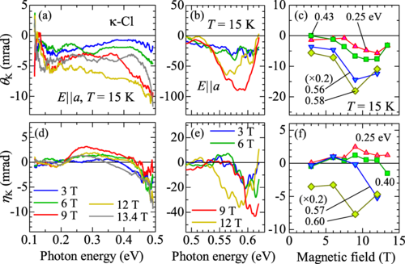

- Previous Talks: Established the theoretical framework of altermagnetism, including Landau theory, spin-space groups, and the crucial role of non-symmorphic symmetries.
- ARPES (Topic 4): Provided the first direct visualization of the momentum-dependent spin-splitting ($E(\mathbf{k},\uparrow) \neq E(\mathbf{k},\downarrow)$) at the material's surface.
- My Focus: We move from the surface to the bulk. Optical spectroscopy measures the integrated response of the entire electronic band structure, making it a complementary and essential probe.
- Central Question: How does the unique spin-splitting of altermagnets, without a net magnetization, manifest in their interaction with light?
Off-Diagonal Optical Conductivity
-
The interaction of light with a medium: $D = \varepsilon_0 \tilde{\varepsilon}_{ij} E$
complex optical conductivity tensor, $\tilde{\sigma}_{ij}(\omega)$ or dielectric tensor, $\tilde{\varepsilon}_{ij}(\omega)$: .
Without Magnetization
$$\tilde{\varepsilon} = \begin{pmatrix} {\varepsilon}_{xx} & 0 & 0 \\ 0 & {\varepsilon}_{xx} & 0 \\ 0 & 0 & {\varepsilon}_{xx} \end{pmatrix}$$
With Magnetization
$$\tilde{\varepsilon} = \begin{pmatrix} \tilde{\varepsilon}_{xx} & \tilde{\varepsilon}_{xy} & 0 \\ -\tilde{\varepsilon}_{xy} & \tilde{\varepsilon}_{xx} & 0 \\ 0 & 0 & \tilde{\varepsilon}_{zz} \end{pmatrix}$$
- Time-reversal symmetry ($\mathcal{T}$) breaking is required for non-zero off-diagonal elements ($\tilde{\sigma}_{xy} \neq 0$).
- In ferromagnets, net magnetization $\mathbf{M}$ breaks $\mathcal{T}$, so $\tilde{\sigma}_{xy} \propto \mathbf{M}$.
- In altermagnets, $\mathbf{M}=0$. However, the combined symmetry of $\mathcal{T}$ and a crystal rotation/translation is broken by the spin order. This is sufficient to allow $\tilde{\sigma}_{xy} \neq 0$.
The Magneto-Optical Kerr Effect
The complex Kerr effect directly probes this tensor:
$$\theta_K + i\eta_K \propto \tilde{\sigma}_{xy}(\omega)$$
- $\theta_K$ (Rotation) $\leftrightarrow$ Dispersive part, Im($\tilde{\sigma}_{xy}$)
- $\eta_K$ (Ellipticity) $\leftrightarrow$ Dissipative part, Re($\tilde{\sigma}_{xy}$)
Polarization Conventions:
- a: polar
- b: longitudinal
- c: transversal

Kramers-Kronig Relations
Concept: Relate the real and imaginary parts of a response function.
Condition: Must be a response function (analytic in the upper half-plane).
Application: In MOKKA, we treat $f(\omega)$ as a response function, allowing us to extract the dichroism ratio from the Kerr angle.

$$ \text{Re}[f(\omega)] = \frac{1}{\pi} \mathcal{P} \int_{-\infty}^{\infty} \frac{\text{Im}[f(x)]}{x - \omega} dx \hspace{2em} \text{Im}[f(\omega)] = -\frac{1}{\pi} \mathcal{P} \int_{-\infty}^{\infty} \frac{\text{Re}[f(x)]}{x - \omega} dx $$
Magneto-Optical Kramers-Kronig Analysis
- Measurement: Use linear polarizers to get total reflectivity $R(\omega)$ and Kerr rotation $\theta_K(\omega)$.
- Define Auxiliary Function: $f(\omega) = \ln\left(\frac{\tilde{r}_-}{\tilde{r}_+}\right) = \ln c(\omega) + 2i\theta_K(\omega)$
- Apply Kramers-Kronig: Since $f(\omega)$ is causal, we can calculate the real part (dichroism ratio $c(\omega)$) from the measured imaginary part ($\theta_K(\omega)$). $$ \ln c(\omega) = \frac{2\omega}{\pi} \mathcal{P} \int_0^\infty \frac{2\theta_K(x)}{x^2 - \omega^2} dx $$
- Reconstruct & Solve: With $\left[R = (R_+ + R_-)/2\right]$ and $\left[c = R_-/R_+\right]$, we solve for $R_+$ and $R_-$ individually. A final KK transform on these yields the full complex $\tilde{r}_\pm(\omega)$.
This method avoids the spectral limitations of wave plates and is highly sensitive to small signals, making it ideal for altermagnets.
MOKKA: The 45-Degree Fast Protocol
For experiments in extreme conditions (high B-field, low T), rotating optics is impossible. MOKKA enables a static, "fast protocol".
- Setup: Polarizer and analyzer are fixed at 45° to each other. This geometry maximizes sensitivity to rotation.
- Intensity Signal: The detector intensity becomes directly proportional to the Kerr angle. For small angles: $$ I_{\pm45^\circ} \approx C \cdot R(\omega) \frac{1 \pm 2\theta_K(\omega)}{2} $$
- Extraction: By measuring the intensity ratio at positive and negative magnetic fields, we can isolate $\theta_K$: $$ \rho_{\pm45^\circ}(B) = \frac{I_{\pm45^\circ}(+B)}{I_{\pm45^\circ}(-B)} \approx 1 \pm 4\theta_K(B) $$
MOKKA: The 45-Degree Fast Protocol
This allows for reference-free, in-situ measurement of the Kerr rotation, a critical capability for studying field-induced phenomena in altermagnets.

Success in Organic Altermagnet $\kappa$-Cl
- Material: $\kappa$-(BEDT-TTF)₂Cu[N(CN)₂]Cl, a quasi-2D organic Mott insulator.
- Key Signature: A highly non-linear dependence of the MOKE signal on the applied magnetic field.
-
The signal does not track the small canted moment (linear in H), but instead scales with the
Néel vector , the primary antiferromagnetic order parameter. - The off-diagonal conductivity $\tilde{\sigma}_{ca}(\omega)$ shows distinct peaks at the edges of the $\pi$-electron interband transition.

Fig: Non-linear field dependence of Kerr rotation in $\kappa$-Cl. The signal emerges sharply around 6-7 T, inconsistent with a simple canted moment.
The Decisive Argument for $\kappa$-Cl: Energy Scales
How do we prove the signal is from Altermagnetism and not just Spin-Orbit Coupling (SOC)?
- SOC Energy Scale ($\lambda_{SOC}$): SOC is a relativistic effect. In the light organic molecules of $\kappa$-Cl, its energy scale is minuscule: $$ \lambda_{SOC} \approx 1 \text{ meV} $$
- Observed Splitting ($E_{splitting}$): The energy separation of the peaks in $\tilde{\sigma}_{ca}(\omega)$ provides a direct measure of the spin-splitting of the electronic bands. This was found to be: $$ E_{splitting} \approx 100 \text{ meV} $$
The Decisive Argument for $\kappa$-Cl: Energy Scales
How do we prove the signal is from Altermagnetism and not just Spin-Orbit Coupling (SOC)?
- Conclusion: The observed splitting is two orders of magnitude larger than what can be explained by SOC. $$ E_{splitting} \gg \lambda_{SOC} $$ This vast mismatch is irrefutable evidence that the spin-splitting is non-relativistic and originates from the crystal-field-driven altermagnetic mechanism.
Case Study 2: The RuO₂ Controversy
RuO₂ was a canonical theoretical candidate for altermagnetism. However, optical spectroscopy on high-quality
Finding 1: The Plasma Frequency
- The low-energy (intraband) response was used to extract the plasma frequency, $\omega_p$.
- $\omega_p$ depends on carrier density and effective mass ($m^*$).
- Result: The experimental $\omega_p$ perfectly matched DFT calculations for a
non-magnetic metal. - The altermagnetic model, which requires correlations that increase $m^*$, predicted a much lower $\omega_p$, contradicting the data.
Case Study 2: The RuO₂ Controversy
RuO₂ was a canonical theoretical candidate for altermagnetism. However, optical spectroscopy on high-quality
Finding 2: The Pauli Edge
- The high-energy (interband) conductivity shows a sharp absorption onset at 90 meV.
- This is a textbook
Pauli Edge, a fingerprint of a Dirac nodal line in the band structure. - Result: This nodal line is a key feature of the
non-magnetic band structure of RuO₂. - The altermagnetic state would destroy this feature. Its clear observation is strong evidence
against altermagnetism in the bulk.
Fermi-Liquid Behavior in RuO₂
The intraband carrier dynamics provided the final piece of the puzzle. The data was analyzed using an
- The model assumes a scattering rate that depends on temperature and frequency: $$ 1/\tau(\omega, T) = 1/\tau_0 + A \cdot [(\hbar\omega)^2 + (p\pi k_B T)^2] $$
- This quadratic dependence is the textbook signature of a
Fermi Liquid , a well-behaved paramagnetic metal. - The experimental data for RuO₂ fit this model perfectly, confirming its non-magnetic, metallic ground state.
Conclusion: While altermagnetism may be present in strained thin films of RuO₂, the ground state of the bulk crystal is a non-magnetic Fermi liquid. This highlights the importance of bulk-sensitive probes and high-quality samples.
Indirect Probes: Phonon Circular Dichroism
Even if the electronic MO signal is weak, magnetism can be detected indirectly through its coupling to the lattice, as shown in the Weyl ferromagnet Co₃Sn₂S₂.
-
Observation: Infrared-active phonons show
Circular Dichroism (CD) , meaning they absorb left- and right-circularly polarized light differently. -
Mechanism: This is not an intrinsic phonon property. It arises from
Fano Resonance , an interference between the discrete phonon and the continuous electronic excitations of the chiral Weyl fermions.
Yellow = Resultant Elliptical Path (CD Effect)
Indirect Probes: Phonon Circular Dichroism
Even if the electronic MO signal is weak, magnetism can be detected indirectly through its coupling to the lattice, as shown in the Weyl ferromagnet Co₃Sn₂S₂.
- The lineshape asymmetry, quantified by the Fano parameter $q$, measures the electron-phonon coupling strength: $$ \sigma(\omega) \propto \frac{(q + \epsilon)^2}{1 + \epsilon^2} \quad \text{where} \quad \epsilon = \frac{\omega - \omega_0}{\gamma} $$
- The phonon CD and Fano asymmetry appear only below the Curie temperature, proving the phonons are "borrowing" chirality from the magnetic electronic system. This is a powerful indirect proof of magnetism.
Summary & Outlook
Optical spectroscopy provides a powerful, bulk-sensitive toolkit for identifying and characterizing altermagnets.
| Material | Key Optical Signature | Altermagnetic Evidence Strength |
|---|---|---|
| $\kappa$-Cl | Non-linear MOKE; $E_{splitting} \gg \lambda_{SOC}$ | Very Strong |
| RuO₂ (Bulk) | Pauli Edge & Plasma Frequency match non-magnetic model | Strong Negative |
| Co₃Sn₂S₂ | Phonon Circular Dichroism via Fano Resonance | Strong (Indirect Proof of Principle) |
Questions?
Key Takeaways:
- The off-diagonal conductivity $\tilde{\sigma}_{xy}(\omega)$ is the primary fingerprint.
- MOKKA is the state-of-the-art technique for its extraction.
- A critical comparison of energy scales ($E_{splitting}$ vs. $\lambda_{SOC}$) is essential to rule out conventional effects.